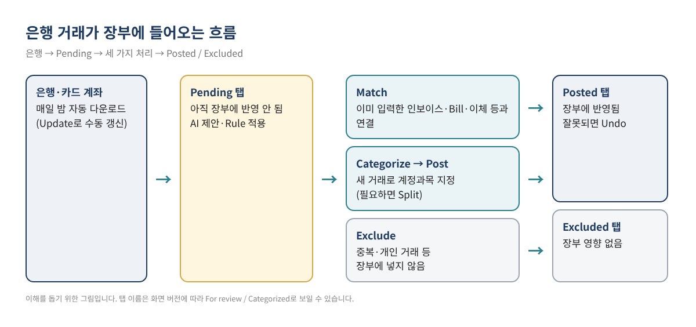
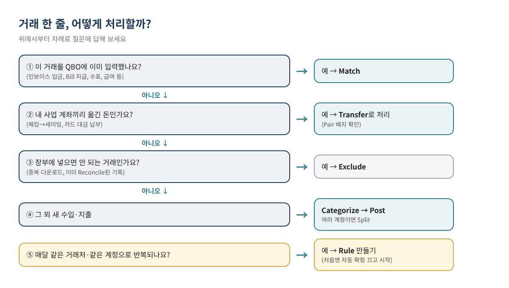
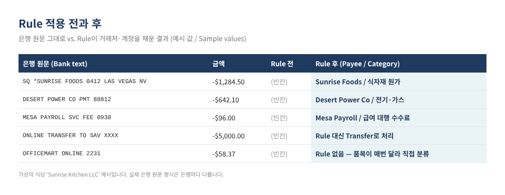
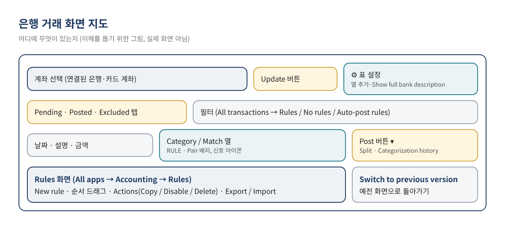

QuickBooks Online(QBO)에 은행 계좌를 연결해 두면 거래가 매일 자동으로 들어옵니다. 그런데 몇 주만 손을 놓아도 확인하지 않은 거래가 수백 줄 쌓이고, 급한 마음에 전부 "Ask My Accountant"나 엉뚱한 계정으로 넣어 버리기 쉽습니다. 이미 입력해 둔 인보이스 입금을 새 수입으로 또 넣어 매출이 두 배로 잡히는 일도 흔합니다.
이 글은 은행 연결에서 시작해 거래 한 줄 한 줄을 Match(기존 기록과 연결), Categorize·Post(새 거래로 추가), Exclude(제외) 중 무엇으로 처리할지 고르는 기준, 그리고 반복 거래를 Rule(은행 규칙)로 자동 분류하는 방법까지 순서대로 정리합니다. 시리즈 첫 글 QuickBooks Online 기초 가이드에서 짧게 소개한 "은행 연결" 부분을 실제 작업 단계까지 자세히 다룹니다.
이런 분께 필요합니다 ☐ 은행 거래 화면에 확인 안 한 거래가 수십~수백 개 쌓여 있는 분 ☐ Match와 Add(Categorize)의 차이가 헷갈리는 분 ☐ 매달 같은 거래처 지출을 매번 손으로 분류하고 있는 분 ☐ 은행 연결 후 매출·비용이 이중으로 잡힌 것 같은 분
은행에서 내려받은 거래는 처음에 Pending 탭에 모입니다. 여기 있는 동안은 장부(손익계산서·대차대조표)에 아직 아무 영향이 없습니다. 사용자가 각 거래를 Match, Categorize 후 Post, 또는 Exclude로 처리해야 비로소 Posted 탭(장부 반영) 또는 Excluded 탭(장부 미반영)으로 옮겨 갑니다.

Intuit는 최근 AI 기능이 들어간 새 은행 거래 화면을 도입했고, 화면 버전에 따라 탭 이름이 다르게 보일 수 있습니다. 같은 기능이 아래처럼 불립니다.
| 새 화면 | 예전 화면에서 자주 보던 이름 | 의미 |
|---|---|---|
| Pending | For review | 아직 처리하지 않은 거래. 장부 영향 없음 |
| Posted | Categorized | 처리가 끝나 장부에 반영된 거래 |
| Excluded | Excluded | 장부에 넣지 않기로 한 거래 |
| Post 버튼 | Add / Confirm 버튼 | 선택한 분류·매치를 확정 |
팁 새 화면이 불편하면 은행 거래 화면의 Switch to previous version으로 예전 화면으로 돌아갈 수 있다고 Intuit 도움말에 안내되어 있습니다. 다만 메뉴 위치는 자주 바뀌므로 메뉴가 보이지 않으면 상단 검색창에 "Bank transactions" 또는 "Rules"를 입력해 찾는 것이 가장 빠릅니다.
시작 날짜는 기초 잔액 날짜 다음 날로 맞추는 것이 일반적입니다. 이미 손으로 입력한 기간까지 내려받으면 같은 거래가 두 번 들어옵니다. 기초 잔액을 잡는 방법은 QBO 처음 시작하기: 기초 잔액과 Chart of Accounts 세팅을 참고하세요.
은행 거래 정리에서 가장 중요한 판단은 "이 거래를 QBO에 이미 기록했는가"입니다. 이미 기록했다면 새로 만들지 말고 Match로 연결해야 하고, 처음 보는 거래라면 Categorize로 새 기록을 만듭니다.

| 처리 방법 | 언제 쓰나 | 장부 결과 | 대표 예 (예시 값 / Sample values) |
|---|---|---|---|
| Match | QBO에 이미 입력한 인보이스 입금, Bill 지급, 수표, 급여, 이체 등이 있을 때 | 새 거래를 만들지 않고 기존 기록과 연결. 인보이스·Bill은 자동으로 결제 완료 처리 | 고객 A의 인보이스 #1042 입금 $2,400 |
| Categorize → Post | QBO에 아직 없는 새 수입·지출 | 선택한 계정과목으로 새 거래 생성 | 식자재 구입 $1,284.50 → 식자재 원가 |
| Transfer | 내 사업 계좌끼리 옮긴 돈, 사업 카드 대금 납부 | 수입·비용이 아니라 두 계좌 간 이동으로 기록 | 체킹 → 세이빙 $5,000 |
| Exclude | 중복 다운로드, 이미 Reconcile된 기록과 겹치는 거래 등 | 장부에 아무 영향 없음 (Excluded 탭에 보관) | 같은 날 같은 금액이 두 번 들어온 거래 |
Intuit 도움말에 따르면 QBO는 금액이 같고 은행 거래 날짜 기준 90일 전부터 20일 후까지 범위에 있는 기록을 Match 후보로 제안합니다. 새 AI 화면에서는 거래처 일치, 날짜 근접성, 과거에 같은 종류를 매치한 횟수 등도 함께 반영하며, 부분 매치나 여러 건을 묶은 매치도 찾을 수 있다고 설명합니다.
새 화면에는 거래마다 신호 아이콘이 붙습니다. 초록색 체크는 과거 패턴이 분명한 경우, 파란색 정보 아이콘은 다소 차이가 있어 확인이 필요한 경우, 주황색 경고는 판단 근거가 부족한 경우입니다. 또 이체나 카드 대금 납부로 예상되는 거래에는 Pair 배지가 붙어, 한쪽을 Post하면 반대쪽 계좌 거래도 함께 처리됩니다. Essentials 이상 요금제에서는 확신도가 높은 거래를 모아 한 번에 검토하는 Ready to post 배너도 제공된다고 안내되어 있습니다. 어떤 경우든 AI 제안은 제안일 뿐이며, Post 전에 계정과목을 확인하는 책임은 사용자에게 있습니다.
매달 같은 식자재 공급업체, 같은 전기 회사, 같은 급여 대행 수수료처럼 거래처와 계정이 늘 같은 거래는 Rule을 만들어 두면 분류가 자동으로 채워집니다.

| 설정 항목 | 예시 입력 (예시 값 / Sample values) | 메모 |
|---|---|---|
| Rule 이름 | 식자재 - Sunrise Foods | 나중에 찾기 쉽게 "계정 - 거래처" 형식 추천 |
| 적용 대상 | Money out / Business Checking | 카드에도 같은 지출이 있으면 All bank accounts |
| 조건 1 | Bank text · Contains · SUNRISE FOODS | 지점 번호·날짜처럼 바뀌는 부분은 빼고 고정된 단어만 |
| 조건 2 (선택) | Amount · 금액 조건 | 금액이 비슷한 범위일 때만 사용. 매번 다르면 생략 |
| 채울 내용 | Payee: Sunrise Foods / Category: 식자재 원가 | 계정은 Chart of Accounts에 있는 것만 선택 가능 |
| 자동 확정 | 처음 1~2개월은 끔 | 결과가 안정적이라고 확인한 뒤 켜기 |
Bank text는 은행이 보낸 원문 그대로이고, Description은 QBO가 읽기 쉽게 다듬은 설명입니다. 원문을 보고 싶으면 은행 거래 화면의 설정 ⚙에서 Show full bank description을 켭니다. 같은 거래처라도 원문에 지점 번호나 날짜가 붙어 매번 조금씩 달라지므로, 조건은 변하지 않는 핵심 단어를 Contains로 거는 것이 잘 맞습니다.
Rule 화면의 Automatically confirm transactions this rule applies to를 켜면, 조건에 맞는 거래가 Pending 탭에서 사람이 확인하지 않고 바로 장부에 반영됩니다. 이런 Rule에는 AUTO 배지가 붙습니다. Intuit 도움말에 따르면 자동 확정 Rule은 로그인할 때, 파일을 업로드할 때, 자동 확정 Rule을 만들거나 수정할 때 실행됩니다. 편리하지만 조건이 너무 넓으면 엉뚱한 거래까지 잘못 분류된 채로 장부에 들어가므로, 처음에는 끈 상태로 결과를 지켜본 뒤 켜는 것이 안전합니다.
Rule을 만들지 않는 편이 나은 거래 온라인 쇼핑몰, 대형 마트처럼 살 때마다 품목이 달라 계정이 바뀌는 거래, 사장님 개인 지출이 섞일 수 있는 거래, 계좌 간 이체는 Rule로 묶지 말고 직접 확인하는 것이 좋습니다. 이체는 Pair 배지나 Transfer 처리로 다룹니다.

휴대폰 QBO 앱에서도 Menu → Accounting → Bank transactions에서 매치 제안을 확인하고, See why로 제안 이유를 볼 수 있다고 안내되어 있습니다. 출퇴근길에 몇 건씩 처리해 두면 월말에 몰리지 않습니다.
가상의 식당 "Sunrise Kitchen LLC"(네바다주 라스베이거스)가 10월 한 달 동안 사업 체킹 계좌에 142건, 사업 카드에 61건의 거래를 내려받았다고 가정합니다. 이 식당은 POS 매출 입금과 배달앱 정산, 식자재 공급업체 지급, 외부 급여 대행 서비스를 이용합니다. (아래 숫자는 모두 예시 값 / Sample values입니다.)
| 거래 종류 | 건수 | 처리 방법 | 포인트 |
|---|---|---|---|
| 고객 인보이스 입금 (케이터링) | 6 | Match | 인보이스를 먼저 입력해 두었으므로 Match → 자동으로 결제 완료 |
| 카드 매출 일일 정산 입금 | 31 | Categorize + Rule | "POS DEPOSIT" 포함 → 매출 계정. 매일 반복되어 Rule 적합 |
| 식자재 공급업체 지급 | 18 | Match 또는 Rule | Bill로 입력한 업체는 Match, Bill 없이 카드로 내는 업체는 Rule |
| 급여 대행 서비스 출금 | 4 | Match 또는 Categorize | 급여 기록 방식에 따라 다름 (아래 링크 참고) |
| 전기·가스·인터넷 | 3 | Rule | 거래처와 계정이 매달 같음 |
| 체킹 → 세이빙, 카드 대금 납부 | 3 | Transfer | Pair 배지 확인. 비용으로 넣지 않음 |
| 대형 마트·온라인 구매 | 22 | Categorize (필요하면 Split) | 품목이 매번 달라 Rule 대신 직접 분류 |
| 같은 금액 중복 다운로드 | 2 | Exclude | 은행 명세서에서 한 번만 있는지 확인 후 제외 |
첫 달에는 Rule을 6개 정도 만들고 자동 확정은 모두 꺼 둡니다. 다음 달에는 RULE 배지가 붙은 거래를 훑어보고 Post만 누르면 되므로, 전체 처리 시간이 크게 줄어듭니다. 두 달 동안 잘못 분류된 적이 없는 Rule(예: 전기 회사)만 자동 확정으로 바꿉니다. 마지막으로 은행 명세서 잔액과 맞추는 Reconcile까지 하면 한 달 정리가 끝납니다. 외부 급여 서비스 출금을 기록하는 방법은 외부 급여 서비스 기록과 Payroll Clearing 계정을 참고하세요.
아닙니다. Pending 탭의 거래는 Post(또는 Match)하기 전까지 장부에 반영되지 않습니다. 그래서 Pending이 많이 쌓여 있으면 리포트 숫자가 실제보다 적게 보일 수 있습니다.
Posted 탭에서 해당 계좌와 거래를 찾아 Undo를 선택하면 다시 Pending으로 돌아가 고칠 수 있습니다. Intuit는 매달 Reconcile 전에 잘못된 매치를 바로잡도록 권합니다. Reconcile까지 끝난 거래라면 되돌리기 전에 지난 마감에 미치는 영향을 먼저 확인합니다.
Intuit 도움말은 Rule이 Pending(For review) 탭의 거래에 적용된다고 설명합니다. 이미 Post한 과거 거래까지 바꾼다는 안내는 없으므로, 과거 거래를 고치려면 따로 수정하거나 재분류해야 합니다.
연결 화면에서 Request a provider로 요청할 수 있고, 연결이 안 되는 은행은 은행 웹사이트에서 거래 파일을 내려받아 수동으로 업로드하는 방법이 Intuit 도움말에 안내되어 있습니다. 지원 파일 형식과 절차는 현재 도움말을 확인하세요.
초록색 신호가 붙은 거래도 결국 사용자가 확인하고 Post하는 구조입니다. 특히 사업 초기에는 과거 데이터가 적어 제안이 부정확할 수 있으므로, 금액이 크거나 처음 보는 거래처는 꼭 계정과목을 확인하세요. 계정 제안이 오히려 방해가 되면 설정 ⚙에서 Enable suggested categorization을 끌 수 있다고 안내되어 있습니다.
이 글은 일반적인 교육용 정보이며 세무·법률·재무 자문이 아닙니다. 개별 상황에 대한 판단은 담당 전문가와 확인하시기 바랍니다. QBO 화면, 메뉴 이름, 기능과 요금제는 자주 바뀌므로 실제 작업 전 현재 화면과 Intuit 공식 도움말을 확인하세요. 글 속 회사 이름과 숫자는 모두 설명을 위한 가상의 예시입니다.
QuickBooks is a registered trademark of Intuit Inc.; not affiliated with or endorsed by Intuit.